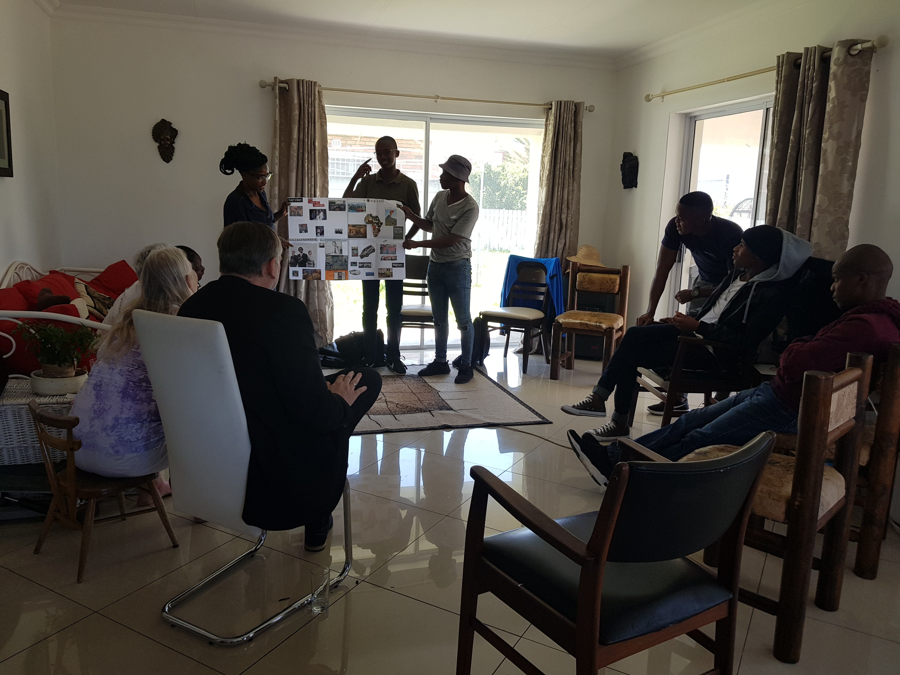

About Us
“You are alive to give voice, action and physicality to GOD. To become the grandest version of the greatest vision you hold about Who You Are.”
A Magical Journey of Discovery

I was en-trained and have been practicing since 2011, so I am an experienced Reconnective Healing Practitioner for Level I/II (Reconnective Healing) and Level III (The Reconnection).
A QUICK, ALL IMPORTANT UPDATE (June 2014)
I am grateful for the introduction into the field of energy healing introduced by RH, but I am even more humbled to have progressed on to working with the Christ Consciousness. The Light, Love and Wisdom felt during a session communicates & merges with Your Light within and you know, instinctively, that you have experienced Grace.
To continue 🙂 … I’ve always had this sense that “there must be more to life”, than what many seem to accept as the norm. So I’ve made it my business to attend seminars and immerse myself in books that explores the mysteries of this world, whether it be self help books, books on spiritual matters, books that address metaphysical concepts – anything really that would bring me closer to understanding more of the SELF. This, in itself, has made Life quite fascinating – a magical journey of discovery that I would encourage everyone to embark on.
Always searching for the root cause of an emotional or physical problem, I considered many options, until I was introduced to Dr. Eric Pearl (2011). I did not hesitate to attend the seminars in Sydney, Australia. On my return to South Africa, I immediately started offering The Reconnection and Reconnective Healing sessions.
Despite doing sessions on an almost daily basis, every interaction with my client continues to leave me in absolute awe of our ability to commune with GOD / The Universe / Source Energy / The Creator (or whatever label you are most comfortable using). And every session confirms that we are all Divine, that the spark of GOD resides within us – all we need do is allow it to come forth. Albeit sometimes skeptical, clients that have come for sessions, find themselves booking a second or third session.
I am based in Lakeside, Cape Town and most of my clients come to my home-office. Clients living in other Provinces book distant healing sessions or would plan sessions during their holidays to the Cape.
During office hours, I manage an NGO. Healing sessions are strictly by appointment. Available times are: weekdays after 6pm, Saturdays and Sundays from 3pm. And should you be wondering – my youngest client is aged 8yrs and the eldest, to date is aged 79yrs.
Session Logistics & Hours
- Practicing Since: 2011 (Sydney, Australia training)
- Location: Lakeside, Cape Town (Home-Office)
- Available Times: Weekdays after 6pm, Saturdays & Sundays from 3pm
- Format: In-person or Distant Healing sessions
- Daily Work: NGO Management (African Scholars' Fund)
- Client Span: 8 years young to 79 years grand
Biography
I am a graduate of the University of Cape Town Graduate School of Business; an experienced Reconnective Healing Practitioner (having added the skill of presenting Meditation and Conscious Breathing Workshops into the mix). Conversational or presenting the more structured Life Coaching Workshops is second nature and I resonate strongly with the work of Drs Hurtak (Academy for Future Science). However, being a student and friend of St Germain is what brings me the most joy. My 9-year Spiritual Journey with the enigmatic Comte de St Germain was recently shared with the world in my internationally published work (A Most Extraordinary Journey of Self-discovery).
I consider myself an ordinary individual, grounded in the realities of daily life. I am a mother, a colleague, a friend and a sibling - someone who laughs with abandon, sheds tears unashamedly, feels the full spectrum of emotions, and loves fiercely. I am not immune to the world's hardships and the harsh realities of corruption, inequality, and inhumanity. And yes, I often voice my frustration with a heartfelt, “What the f#ck!”
I've always had this sense that “there must be more to life” than what the status quo offers - that there is a greater truth beyond what most people settle for. My hunger for understanding has led me to seminars, books, and teachings that dive into the mysteries of the world. These steps are not just intellectual - each step is a quest to know the Self more deeply, to uncover the truth of who I really am. I believe that true freedom comes from self-awareness, and that the journey is most enlightening when guided by wisdom and clarity.
In these shifting times, I fully embrace the dawning of the Age of Aquarius - a time when the individual is called to take full responsibility for their own path. With courage, understanding, and consciousness. And so I urge others to step into their power and experience life with intention and self-awareness. For me, the human journey is not one to be left to chance; it is something to be consciously directed and lived to its fullest potential.

Transforming inner clarity into shared growth, vision, and real-world alignment.
Do call me – let's have an informal chat over a cup of tea
I am sure you have lots of questions and you will be under no obligation to then book a session. Psssssttt – really, I don't charge "an arm and a leg" for a 30 minute session.
You are alive to give voice, action and physicality to GOD. To become the grandest version of the greatest vision you hold about Who You Are.